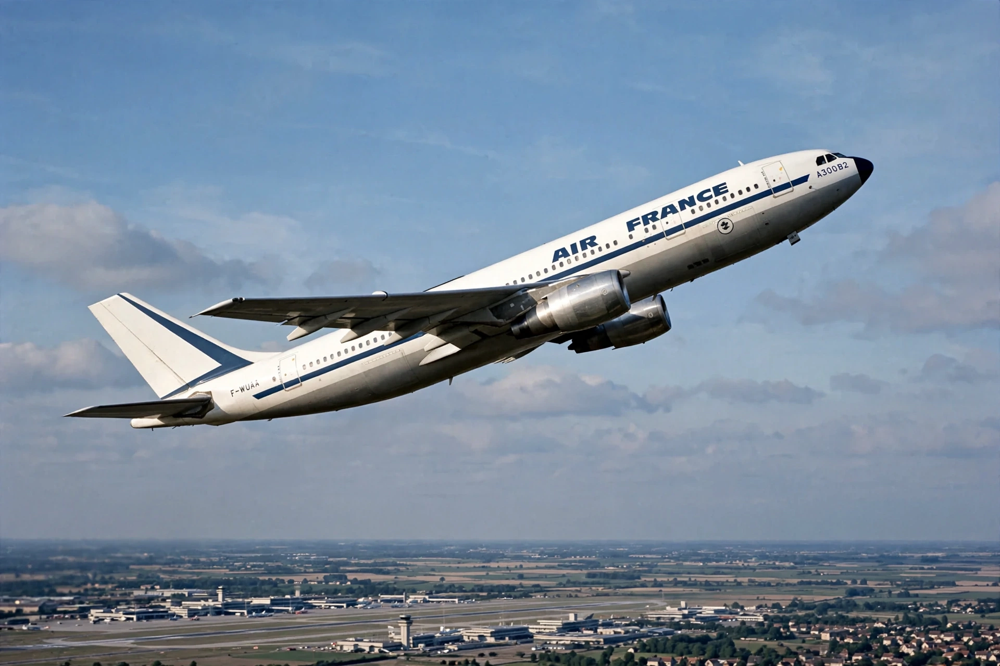

| Airbus A300 | |
|---|---|
| Manufacturer | Airbus |
| First flight | October 28, 1972 |
| Introduction | May 23, 1974, with Air France |
| Status | In cargo service |
| Produced | 1972–2007 |
| Number built | 561 |
| Variants | A300-600, A300B2/B4, A300-600ST Beluga |
| Developed into | Airbus A310, Airbus A330 |
The Airbus A300 is a wide-body airliner developed and manufactured by Airbus. In September 1967, aircraft manufacturers in the United Kingdom, France and West Germany signed an agreement to develop a large airliner; the resulting consortium became Airbus Industrie. The A300 was the first twin-engine wide-body aircraft in production and the first product of the Airbus consortium. It first flew on October 28, 1972 and entered service with Air France on May 23, 1974.

The A300 was conceived as a 250–300-seat twinjet for short- and medium-haul routes, competing with the Lockheed L-1011 TriStar and McDonnell Douglas DC-10, but with two engines instead of three. After a slow start — at one point unsold "whitetail" aircraft were parked at Toulouse — sales took off following Eastern Air Lines' 1977 decision to lease and then buy the type, which broke Airbus into the U.S. market. Frank Borman, Eastern's president and a former astronaut, championed the deal.
Early production versions were the A300B2 and the longer-range A300B4. The definitive A300-600, introduced in 1983, added a two-crew glass cockpit derived from the A310, wingtip fences and increased use of composites. The A300-600ST "Beluga" outsized freighter was developed to carry Airbus components between factories. A freighter version, the A300-600F, was the last variant in production; the final A300 was delivered to FedEx Express in July 2007, ending a production run of 561 aircraft.
Passenger A300s were largely retired by the 2010s, but the type remains a mainstay of cargo operations: FedEx Express and UPS Airlines are the largest operators of the A300-600F. The aircraft also served as the basis of the French-built military tanker experiments and, indirectly, of the A330 MRTT programme's design lineage through the A330.
Typical seating is 247 passengers in two classes (max 361); length 54.1 m, wingspan 44.8 m, range about 7,540 km with CF6 or PW4000 engines, cruising speed Mach 0.78.